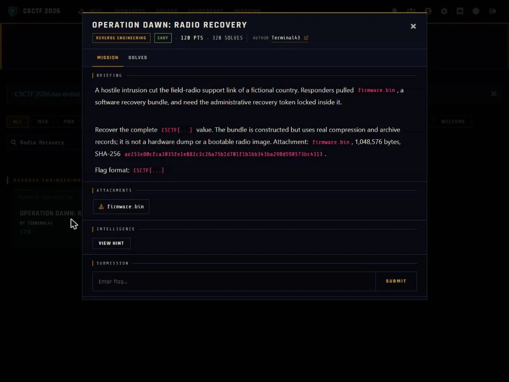

01Start point: firmware.bin, the DWFW container
- What I did: opened firmware.bin (1,048,576 bytes, SHA-256 ae253e80...4313), the only attachment, and parsed its header.
- What I found: it starts with DWFW, then a u16 version and a u16 entry count of 4, then 20-byte entries (name[8], u32 offset, u32 size, u32 crc32). All four CRCs verify: loader (U-Boot SPL string), ubootenv (16 KiB), msgcat (258 bytes of boot strings) and rootfs (633 bytes). The rest of the 1 MB is 0xFF (empty flash).
- Thinking: the brief says the bundle uses real archive records, so I parsed the container first and used the CRCs to confirm each blob was intact before going deeper.

02Pivot: msgcat is the zlib preset dictionary
- What I found: rootfs begins 78 f9, a zlib stream with the preset-dictionary bit set, and its 4-byte dictid equals the adler32 of msgcat.
- What I did: inflated rootfs with zdict set to msgcat (633 to 2560 bytes), which gave a newc cpio archive.
- Thinking: a preset-dictionary header names the dictionary by checksum, and msgcat matched, so the odd 258-byte blob was the missing piece.
03Pivot: the cpio holds the token and the key rule
- What I found: the cpio holds etc/config/radio with admin_token=7f71b81e...7bed (30 bytes of hex) and etc/init.d/S40admin, which shows how the real key is built at boot.
- What I found: the rule is mac = ethaddr with the colons removed, and key = each token byte XOR the corresponding mac byte, with the 6-byte mac repeating.
- Thinking: the token alone is not the flag, and the boot script says it is masked by the ethaddr, so I needed the right MAC next.
04Pivot: choose the active U-Boot env copy
- What I found: ubootenv is a backup-style U-Boot environment of two 8 KiB copies, each crc(4), flag(1), then NUL-separated vars. Both CRCs are valid. The newer copy (flag 7, recovery=ready) sets ethaddr=3c:22:fb:4a:1d:90, which is what fw_printenv reads at runtime.
- Dead end: the stale copy's 00:11:22:33:44:55 just yields garbage, which confirms the active env is the one to use.
- Thinking: two valid copies meant two candidate MACs, so the flag byte and the recovery state decided which one the radio really uses.
05Flag: XOR the token with the active MAC
- What I did: XORed the token with 3c22fb4a1d90 repeating.
- Thinking: the output was a clean CSCTF{...} string, so no further decoding was needed.
- Result: CSCTF{05_train_kestrel_d48e1f}